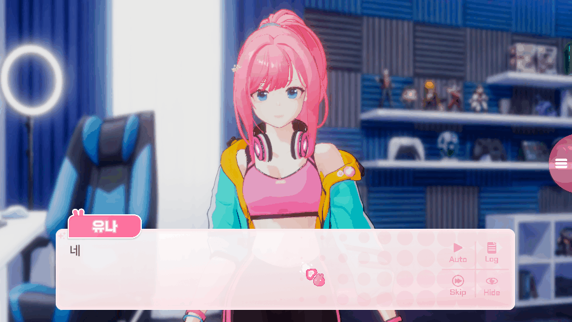
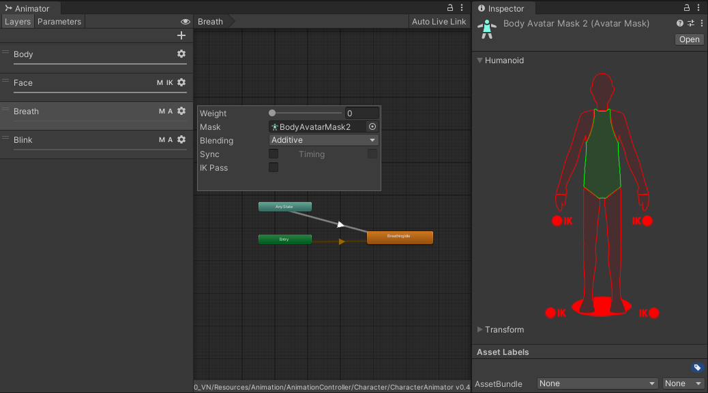

기존 애니메이션의 특정 포즈를 활용한 대기 연출 구현
프로젝트 요약
전용 대기 애니메이션이 부족한 상황에서 기존 리소스를 조합해 특정 포즈를 유지하는 대기 연출을 제작했습니다.
얼굴과 몸 애니메이션의 재생 속도만 개별적으로 정지시키고, 눈 깜빡임과 호흡은 별도의 Additive 레이어로 계속 재생했습니다. 또한 원하는 정지 지점을 Scene View에서 직접 선택할 수 있는 커스텀 인스펙터를 제작했습니다.

| 항목 | 내용 |
|---|---|
| 프로젝트 | 3D 캐릭터 기반 비주얼 노벨 |
| 담당 | Unity 클라이언트 개발 |
| 기술 | Unity, C#, Animator, StateMachineBehaviour, Custom Editor |
문제 상황
비주얼 노벨 대사에 맞는 감정 애니메이션을 재생한 뒤, 다음 대사가 나오기 전까지 해당 감정과 자세를 자연스럽게 유지하는 연출이 필요했습니다. 하지만 모든 표정과 감정 애니메이션을 추가적인 루프 애니메이션으로 제작할 수 없는 상황이었습니다.
해결 방법
감정 애니메이션을 원하는 프레임에서 정지해 자세를 유지하고, 그 위에 호흡, 눈깜박임 애니메이션 레이어를 Additive Blending 방식으로 적용했습니다.
flowchart LR A["Animation Clip 재생"] subgraph BASE["Base Motion Layer : Body, Face Layer"] direction LR B["지정한 포즈 도달"] C["Base Motion 포즈 유지"] I["잔여 Base Motion 재생"] B ~~~ C C ~~~ I end subgraph ADDITIVE["Additive Motion Layer : Breath, Blink Layer"] direction LR E["Additive Motion Layer Weight 0"] F["애니메이션 재시작"] H["Additive Motion Layer Weight 초기화"] E ~~~ F F ~~~ H end G["새로운 모션 요청"] A --> B A --> E B -->|"FaceSpeed, BodySpeed를<br/>0으로 설정"| C B -->|"Additive Motion Layer Weight를<br/>목표값까지 점진적으로 보간"| F C --> G F --> G G --> H G -->|"FaceSpeed, BodySpeed를<br/> 1로 설정"| I
Animator 전체를 멈추지 않고 현재 State가 사용하는 FaceSpeed 또는 BodySpeed만 0으로 설정해, 다른 Animator 레이어는 계속 동작할 수 있었습니다.
State별 정지 포즈 제어
각 Animator State에 개별 설정을 적용할 수 있도록 StateMachineBehaviour를 상속한 StopPoseLoopingMotion을 구현했습니다. StopPoseLoopingMotion에서 각 State의 애니메이션을 정지할 시점(loopPoseOffset)을 0~1 범위의 정규화된 시간으로 설정할 수 있습니다.
정지 조건
현재 Animator 파라미터가 해당 State의 모션 번호와 일치하고, 애니메이션이 지정한 시점(loopPoseOffset)에 도달하면 속도를 0으로 변경했습니다.
bool shouldPause =
animator.GetInteger(motionTypeHash) == motionInt;
if (!isPausing &&
shouldPause &&
loopPoseOffset <= stateInfo.normalizedTime)
{
isPausing = true;
animator.SetFloat(motionSpeedHash, 0f);
animator.SetTrigger(addictiveLayerTriggerHash);
}Animator.Play() 대신 Speed 파라미터를 사용한 이유
정확한 정지 위치를 맞추기 위해 아래와 같이 같은 State를 다시 재생하는 방법도 검토했습니다. 하지만 동일한 State를 다시 재생하면 OnStateEnter()가 다시 호출되어 상태 초기화 로직이 반복되거나 의도하지 않은 재진입이 발생할 수 있습니다.
따라서 State를 다시 시작하는 대신, 해당 State에서 사용 중인 Speed 파라미터를 0으로 설정하는 방식을 선택했습니다.
눈 깜빡임과 호흡 유지
포즈를 정지한 뒤에도 캐릭터가 살아 있는 것처럼 보이도록 두 개의 Additive 레이어를 사용했습니다.

Additive Weight 보간
보조 레이어의 Weight를 즉시 높이면 정지 포즈와 Additive Motion 사이에서 자세가 튈 수 있습니다.
이를 줄이기 위해 시간값을 누적하고 OutExpo Easing을 적용했습니다.
t += Time.deltaTime * 5f;
t = Mathf.Clamp01(t);
float nextWeight = MathfEx.Lerp(
0f,
maxWeight,
t,
MathfEx.EaseType.OutExpo
);
animator.SetLayerWeight(
addictiveLayerIndex,
nextWeight
);State마다 maxWeight를 다르게 설정할 수 있어 포즈에 따라 눈 깜빡임과 호흡의 적용 강도를 조정할 수 있습니다.
Scene View 포즈 선택 도구
런타임 기능만 구현하면 개발자가 loopPoseOffset에 값을 입력하고 플레이 모드에서 결과를 확인하는 작업을 반복해야 합니다. 이를 개선하기 위해 시각적으로 애니메이션을 확인하면서 loopPoseOffset를 지정할 수 있는 StopPoseLoopingMotionEditor 커스텀 에디터를 제작했습니다.

사용 방법
- Scene의 캐릭터 Animator를 선택합니다.
- 확인할 Animation Clip을 선택합니다.
Start Preview Mode를 실행합니다.Loop Pose Offset슬라이더를 움직입니다.- Scene View에서 실제 정지 포즈를 확인합니다.
float normalizedTime =
loopPoseOffsetProp.floatValue;
float clipTime =
normalizedTime * previewClip.length;
AnimationMode.SampleAnimationClip(
previewAnimator.gameObject,
previewClip,
clipTime
);
SceneView.RepaintAll();StopPoseLoopingMotionEditor.cs
정규화 시간에 클립 길이를 곱해 실제 샘플링 시간을 계산했습니다. 클립 길이가 달라도 동일한 0~1 인터페이스로 정지 지점을 선택할 수 있습니다.